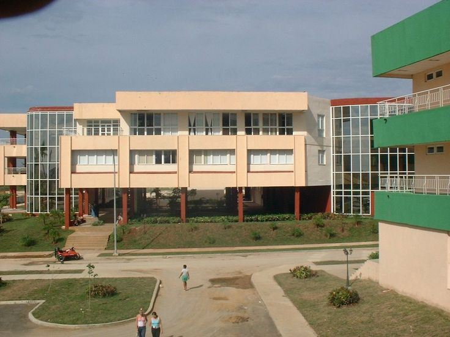
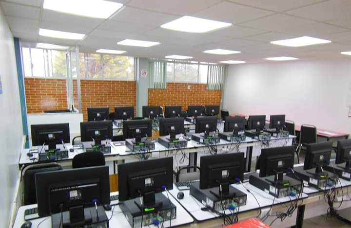
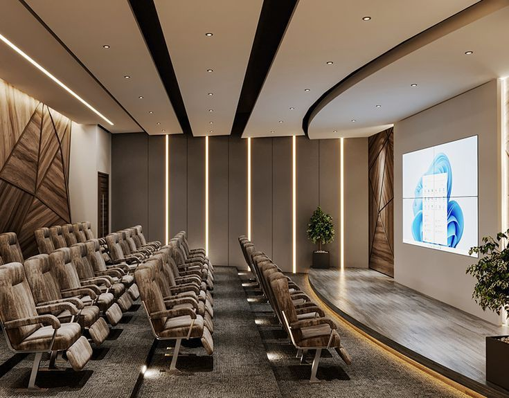

Bienvenidos a la Universidad de las Ciencias Informáticas
La UCI es una institución líder en la formación de profesionales en el ámbito de las tecnologías de la información y las comunicaciones.

Sobre Nosotros
Fundada en el año 2002, la UCI ha sido pionera en la formación de ingenieros en ciencias informáticas en Cuba.
Nuestra misión es formar profesionales comprometidos con el desarrollo tecnológico del país.Carreras
Ofrecemos diversas carreras relacionadas con la informática, como:
- Ingeniería en Ciencias Informáticas
- Ingeniería en Telecomunicaciones
- Ingeniería en Automática

Noticias
Mantente al día con las últimas noticias de la UCI.
Próximamente: Conferencia internacional sobre inteligencia artificial.

Contacto
Para más información, no dudes en contactarnos.
info@uci.cu
+53 7 123 4567